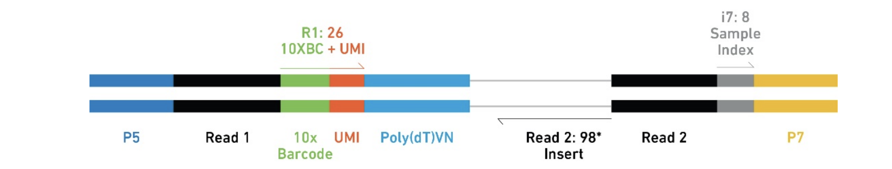

Chapter 1 Download Data and Quantification
1.1 What is single-cell RNA-seq?
Traditional RNA-seq (bulk) sequences RNA from millions of cells blended together - you get the average expression across all cells in your sample.
Single-cell RNA-seq (scRNA-seq) separates individual cells into droplets or wells, sequences each cell separately, then computationally figures out which reads came from which cell.
It seems intimidating the first time dealing with scRNAseq data. However, if you have worked on bulk RNA-seq data, the underlying data structure is the same: A Data Matrix!
My regret is not learning linear algebra well during college.
I barely passed the exam for it (and calculus, it was a nightmare :) ).
To be fair..
It was not taught well and it sounded too boring. I did not know what the application of matrix multiplication was, not until many years later, I started to learn bioinformatics. I find many data are just data matrices:
- an RNAseq expression matrix is a gene-by-sample matrix, with entries to be read counts for each gene
- a single-cell expression matrix is a gene-by-cell matrix, with entries to be read counts for each gene
- a ChIP-seq count matrix is a peak-by-sample matrix, with entries to be the number of reads in each peak
- a drug response matrix is a drug-by-sample matrix, with entries to be IC50 for example
and many more. In other words,
Matrix is EVERYWHERE for bioinformatics (and many other data science topics)!
Many of the bioinformatics problems can be rephrased as matrix manipulation.
The big picture transformation:
Tissue → Dissociated cells → Encapsulated in droplets/wells → Barcoded → Sequenced →
Demultiplexed → Count matrix (genes × cells)Why do we care? Tissues are heterogeneous - different cell types, states, and responses. Bulk sequencing averages over all of that and you lose the information. scRNA-seq lets you see cell type composition, rare populations, cell state transitions, and cell-to-cell variability.
1.1.1 But do you really need single-cell RNA-seq?
Before we go further, I want to be honest about something: scRNA-seq is not always the right choice. I see too many people reaching for single-cell because it’s trendy, when bulk RNA-seq would answer their question better, faster, and cheaper.
Those colorful UMAP plots look great in papers. But ask yourself: does my biological question actually require single-cell resolution? If bulk RNA-seq can test your hypothesis, it’s often the better option.
1.1.1.1 When bulk RNA-seq is sufficient (and better)
If you’re working with cells sorted by flow cytometry (e.g., CD4+ T cells purified to >95% purity), bulk RNA-seq can answer your question perfectly well. You already know what cells you have – no need to re-discover cell types computationally.
Same thing for homogeneous cell lines. If you’re treating Jurkat cells with a drug and asking “what genes change?”, bulk RNA-seq is simpler and gets you there. (That said, some cell lines are more heterogeneous than you think. If you suspect drug-resistant subclones, scRNA-seq could reveal that.)
Here’s a budget trade-off that comes up a lot:
- Option A: 1 scRNA-seq sample per condition (4 conditions) = $4,000-8,000, no replicates
- Option B: 3 bulk RNA-seq replicates per condition (4 x 3 = 12 samples) = $3,000-5,000
Option B gives you statistical power, reproducibility, and more robust differential expression results.
The other thing to note is that, the input of RNA is in the range of 200ng-1ug. Depending on what cell lines are you using, that’s 2-5 millions of cells!
Most of the single-cell experiments capture ~10,000 cells. A million cells is a lot per sample. It is very expensive if you want to sequence millions of cells.
The harsh truth: a single scRNA-seq sample without replicates has limited statistical validity for comparing conditions. You’re trading cell-level resolution for sample-level inference.
If comparing conditions (treatment vs control), aim for at least 2-3 biological replicates per condition - whether using bulk or single-cell.
1.1.1.2 When single-cell is worth it
Choose scRNA-seq when you need to discover unknown cell types, when heterogeneity IS your question (“do T cells exist on a continuum or discrete states?”), when you care about cell-type-specific responses (“which cell types respond to immunotherapy?”), when rare cells matter (cancer stem cells at <1% of tumor), or when you need trajectory analysis.
Don’t choose it when your cells are already purified and homogeneous, when you just want average expression changes between conditions, when your budget doesn’t allow proper replication, or – let’s be honest – when it’s just trendy but doesn’t serve your hypothesis.
Bulk RNA-seq still has real advantages: simpler workflow, better per-gene coverage, easier replication, mature stats (DESeq2/edgeR are battle-tested), and you can run the analysis on a laptop. The downside is obvious: you lose all the heterogeneity information.
1.1.1.3 Cost comparison (2024 estimates)
| Method | Library Prep | Sequencing | Analysis Time | Skills Required |
|---|---|---|---|---|
| Bulk RNA-seq | $100-200/sample | $300-500/sample | 1-2 weeks | Moderate R/Python |
| scRNA-seq (10x) | $800-1,500/sample | $1,000-2,000/sample | 1-3 months | Advanced bioinformatics |
For a 4-condition experiment with 3 replicates:
- Bulk: 12 samples x $500 = $6,000 + 2-3 weeks analysis
- Single-cell: 12 samples x $2,500 = $30,000 + 2-4 months analysis
Is the 5x cost and 4x time investment justified by your biological question? Sometimes yes, often no.
1.1.1.4 The replication problem
I see this mistake all the time:
“I have 10,000 cells per sample - that’s plenty of replication!”
No! Cells within a sample are pseudoreplicates. They’re not independent. For testing condition effects (treatment vs control), you need independent biological samples (different animals/donors/cultures).
The correct design: 3 donors x 2 conditions = 6 samples for scRNA-seq. Aggregate to pseudo-bulk per donor per condition. Use DESeq2/edgeR with donor as replicate (N=3). We will talk about this more in Chapter 5.
One sample per condition? You can explore cell types and marker genes, but you cannot make strong statistical claims about treatment effects.
1.1.1.5 Quick decision guide
Ask yourself: what is my hypothesis? If it’s about cell type composition or heterogeneity, go single-cell. If it’s about average gene expression changes, bulk RNA-seq is fine. Can you afford replication with scRNA-seq? If not, bulk with good replication is the better investment.
Warning signs you’re choosing scRNA-seq for the wrong reasons: “everyone in my field is doing it”, “the UMAP plots look cool”, “reviewers might be impressed.” Those are not good reasons.
Good reasons: “I need to identify which cell types drive the disease phenotype”, “we don’t know the cellular composition of this tissue”, “rare cells are biologically important.”
The best experiment isn’t the flashiest – it’s the one that answers your question reliably. This tutorial teaches you how to analyze scRNA-seq data, but knowing when to use it is equally important.
OK, let’s get to it – since you’re here, you’ve presumably decided single-cell is the right tool for your question.
1.1.2 The 10x Genomics Chromium platform
Our data is from 10x Genomics 3’ chemistry – the most widely used scRNA-seq platform. Here’s how it works at a high level:
- Cells and barcoded beads get mixed in oil droplets (Gel Bead-in-Emulsions, or GEMs)
- Each bead has ~1M copies of oligos with a cell barcode (identifies which droplet), a UMI (tags individual mRNA molecules), and a poly(dT) primer (captures mRNA)
- Reverse transcription happens inside the droplet, then you break the emulsion, amplify cDNA, and sequence

1.1.3 Why UMIs matter
Here’s the problem: to get enough material for sequencing, we amplify cDNA with PCR. But PCR is exponential - one molecule becomes millions of copies. So if you see 1,000 reads for a gene, did they come from 1 molecule that got over-amplified, or from 1,000 original molecules?
UMIs (unique molecular identifiers) solve this. They’re random barcodes added before amplification. If those 1,000 reads have 10 unique UMIs, we know there were ~10 original molecules. UMIs let us count molecules instead of reads. This is critical for accurate quantification.
1.1.4 Cell barcodes
We sequence millions of cDNA fragments from thousands of cells mixed together. How do we know which cell each fragment came from? Each droplet gets a unique 16bp cell barcode. During sequencing:
- R1 contains the cell barcode (16bp) + UMI (10bp in v2, 12bp in v3). So R1 is 26bp in v2 and 28bp in v3.
- R2 contains the actual cDNA sequence (this is what maps to genes)
You group reads by cell barcode, count UMIs per gene per cell, and you get your count matrix.
1.1.5 Sparse matrices
A typical scRNA-seq dataset might have 10,000 cells and 20,000 genes = 200 million possible gene-cell pairs. But most of them are zeros – both for technical reasons (not all mRNA gets captured) and biological reasons (most genes are not expressed in any given cell). Typical sparsity is >90% zeros.
So we store only the non-zero entries in sparse matrix format (Matrix Market .mtx files). This can shrink memory usage from 100GB to 1GB. We’ll see this format shortly when we look at the quantification output.
1.1.6 From FASTQ to count matrix
The goal of this chapter is straightforward: transform raw sequencing reads (FASTQ files) into a count matrix (genes x cells).
FASTQ files (R1: barcodes+UMIs, R2: cDNA)
↓ [Extract cell barcodes and UMIs]
↓ [Map R2 reads to reference genome/transcriptome]
↓ [Count UMIs per gene per cell]
Count matrix (sparse)This sounds simple, but there are practical challenges: millions of reads need fast alignment, reads can span splice junctions, and with 10,000 cells x 50,000 reads per cell, you’re dealing with 500M reads.
1.1.7 Why alevin-fry?
There are several tools for scRNA-seq quantification. Here’s a quick comparison:
| Tool | Algorithm | Speed | Memory | Notes |
|---|---|---|---|---|
| Cell Ranger | STAR (full alignment) | Slow | High (32GB+) | Official 10x pipeline |
| alevin-fry | Selective alignment | Fast | Low (16GB) | Lightweight, flexible |
| kallisto/bustools | Pseudoalignment | Very fast | Low | Mature, widely used |
| STARsolo | STAR + UMI counting | Medium | High | Multi-platform |
Lightweight mapping tools (alevin-fry, kallisto) are now recommended for standard workflows. The speed and memory savings are substantial, and the accuracy trade-off is minimal. See the “Quantification” chapter at sc-best-practices.org.
We use alevin-fry (via simpleaf) because it’s fast (5-10x faster than full alignment), runs on laptops with 8-16GB RAM, works with any chemistry, and benchmarks show comparable accuracy to Cell Ranger.
When would you use Cell Ranger instead? If you need exact reproducibility with published 10x results, if you want Cell Ranger’s QC web reports, or if your lab has an HPC cluster and everyone already uses it. The results are ~98% the same either way.
For learning and most research, alevin-fry is the pragmatic choice.
1.1.8 The splici index
If you build a transcriptome-only index, reads from intronic regions (unspliced pre-mRNA) won’t map and you’ll undercount. In scRNA-seq, nuclear pre-mRNA is often captured, so this matters.
alevin-fry solves this with a “splici” index that contains both spliced transcripts (exon-exon junctions) and intronic sequences. To build it, we need:
genome.fa: Reference genome sequence (FASTA format)genes.gtf: Gene annotations (GTF format - defines exons, genes, transcripts)
simpleaf builds the splici index from these files automatically.
1.2 Description of the Data
The paper describing the dataset is at https://www.ncbi.nlm.nih.gov/pmc/articles/PMC6797728/
The GEO accession: https://www.ncbi.nlm.nih.gov/geo/query/acc.cgi?acc=GSE126030
Experimental design:
Single-cell RNA-sequencing of control and and anti-CD3/anti-CD28 stimulated T cells from human lung, lymph node, bone marrow and blood.
For our purpose, we are going to download the raw data for 4 samples for two conditions for blood: resting and CD3/CD28 activated
- SRX5329394 Donor A CD3/CD28 activated
- SRX5329395 Donor A resting
- SRX5329396 Donor B CD3/CD28 activated
- SRX5329397 Donor B resting
1.3 Download the fastq files using fastq-dl
https://github.com/rpetit3/fastq-dl
Introduction of conda.
Tip, conda is very slow. use mamba as a drop-in replacement for conda.
The relationship of Experiment to Run is a 1-to-many relationship, or there can be many Run accessions associated with a single Experiment Accession (e.g. re-sequencing the same sample). Although in most cases, it is a 1-to-1 relationship, you can use –group-by-experiment to merge multiple runs associated with an Experiment accession into a single FASTQ file.
This is is the case for our datasets: there are multiple SRR runs for the same experiment
FASTQ_DIR="$PWD/pbmc_RNAseq/data"
mkdir -p $FASTQ_DIR
cd $FASTQ_DIR
fastq-dl --accession SRX5329394 --group-by-experiment
fastq-dl --accession SRX5329395 --group-by-experiment
fastq-dl --accession SRX5329396 --group-by-experiment
fastq-dl --accession SRX5329397 --group-by-experimentor write a for loop
depending on your internet speed, it can take hours. It took me:
How big are the files?
ls -shlt
total 97G
8.0K -rw-r--r-- 1 mtang mtang 6.8K Feb 24 22:13 fastq-run-info.tsv
4.0K -rw-r--r-- 1 mtang mtang 127 Feb 24 22:13 fastq-run-mergers.tsv
19G -rw-r--r-- 1 mtang mtang 19G Feb 24 22:12 SRX5329397_R2.fastq.gz
5.2G -rw-r--r-- 1 mtang mtang 5.2G Feb 24 22:01 SRX5329397_R1.fastq.gz
21G -rw-r--r-- 1 mtang mtang 21G Feb 24 21:57 SRX5329396_R2.fastq.gz
6.0G -rw-r--r-- 1 mtang mtang 6.0G Feb 24 21:44 SRX5329396_R1.fastq.gz
18G -rw-r--r-- 1 mtang mtang 18G Feb 24 21:39 SRX5329395_R2.fastq.gz
5.2G -rw-r--r-- 1 mtang mtang 5.2G Feb 24 21:29 SRX5329395_R1.fastq.gz
18G -rw-r--r-- 1 mtang mtang 18G Feb 24 21:10 SRX5329394_R2.fastq.gz
5.1G -rw-r--r-- 1 mtang mtang 5.1G Feb 24 20:59 SRX5329394_R1.fastq.gzYou will need at least 100G disk space for the raw fastq files.
1.3.1 A note on the fastq files
This data is from 10x genomics 3’ data.
From the 10x manual:
The final Single Cell 3’ Libraries contain the P5 and P7 primers used in Illumina bridge amplification PCR. The 10x Barcode and Read 1 (primer site for sequencing read 1) is added to the molecules during the GEMRT incubation. The P5 primer, Read 2 (primer site for sequencing read 2), Sample Index and P7 primer will be added during library construction
A Single Cell 3’ Library comprises standard Illumina paired-end constructs which begin and end with P5 and P7. The Single Cell 3’ v2 16 bp 10x Barcodes are encoded at the start of Read 1, while sample index sequences are incorporated as the i7 index read. Read 1 and Read 2 are standard Illumina sequencing primer sites used in paired-end sequencing. Read 1 is used to sequence the 16 bp 10x Barcode and 10 bp UMI, while Read 2 is used to sequence the cDNA fragment.
Each sample index provided in the Chromium i7 Sample Index Kit combines 4 different sequences in order to balance across all 4 nucleotides.
After cellranger mkfastq, three fastq.gz files will be produced: I1, R1 and R2. I1 is the 8 bp sample barcode, R1 is the 16bp feature barcode + 10 bp UMI, R2 is the reads mapped to the transcriptome.
Feature barcode whitelist can be found at the cellranger installation path: cellranger-2.1.0/cellranger-cs/2.1.0/lib/python/cellranger/barcodes/737K-august-2016.txt
compare v2 and v3 library https://teichlab.github.io/scg_lib_structs/methods_html/10xChromium3.html
The V3 chemistry gave better sensitivity (detects more genes) comparing to the V2 chemistry. In addition, the oligo beads are modified to support feature barcoding. In terms of the 3’ gene expression library preparation, there are only a few nucleotide differences for some oligos. The final library structure is exactly the same, except that the UMI is 10-bp long in V2 but 12-bp in V3. The cell barcodes whitelist for the V3 chemistry can be found here: 3M-february-2018.txt.gz. This file is copied from the Cell Ranger software (using Cell Ranger v3.1.0 as an example): cellranger-3.1.0/cellranger-cs/3.1.0/lib/python/cellranger/barcodes/3M-february-2018.txt.gz. Oligo sequences are provided for both V2 and V3 if they are different. Only V2 library preparation is drawn here.
So how do you know the library is 10x3’ v2 or v3? The paper did not say anything on that. Let’s find it out from the raw fastq files!
The cell barcode is 16bp. Total 26bp, so the UMI is 10bp. It is 10x3’ v2!
How long are the R2 reads?
1.3.2 alignment and quantification using simpleaf
install simpleaf.
configuration
# define env variable
export ALEVIN_FRY_HOME="$PWD/pbmc_RNAseq/af_home"
# simpleaf configuration
simpleaf set-pathsoutput:
2024-02-25T04:07:52.567035Z INFO simpleaf::simpleaf_commands::paths: The ALEVIN_FRY_HOME directory, /mnt/disks/tommy/pbmc_RNAseq/af_home, doesn't exist, creating...
2024-02-25T04:07:52.567985Z INFO simpleaf::utils::prog_utils: could not find piscem executable, so salmon will be required.
found `salmon` in the PATH at /home/mtang/miniconda3/envs/af/bin/salmon
found `alevin-fry` in the PATH at /home/mtang/miniconda3/envs/af/bin/alevin-fryTo align the reads to the transcriptome, we need to build index first
export AF_SAMPLE_DIR="$PWD/pbmc_RNAseq"
REF_DIR="$AF_SAMPLE_DIR/data/refdata-gex-GRCh38-2020-A"
mkdir -p $REF_DIR
IDX_DIR="$AF_SAMPLE_DIR/human-2020-A_splici"
# Download reference genome and gene annotations
wget -qO- https://cf.10xgenomics.com/supp/cell-exp/refdata-gex-GRCh38-2020-A.tar.gz | tar xzf - --strip-components=1 -C $REF_DIRcheck the downloaded files
ls refdata-gex-GRCh38-2020-A/*
refdata-gex-GRCh38-2020-A/reference.json
refdata-gex-GRCh38-2020-A/fasta:
genome.fa genome.fa.fai
refdata-gex-GRCh38-2020-A/genes:
genes.gtf
refdata-gex-GRCh38-2020-A/pickle:
genes.pickle
refdata-gex-GRCh38-2020-A/star:
Genome chrLength.txt chrStart.txt geneInfo.tab sjdbList.fromGTF.out.tab
SA chrName.txt exonGeTrInfo.tab genomeParameters.txt sjdbList.out.tab
SAindex chrNameLength.txt exonInfo.tab sjdbInfo.txt transcriptInfo.tabWe only need the genome fasta file genome.fa and the gene annotation file
genes.gtf. Watch my youtube video xxx to understand those files and where
to get those files in addition to the place from 10x genomics.
Now, we are ready to build the index. Make sure the read length rlen is set correctly, I went to the fastq and wc -L the first read and it is 98 base pairs long.
time simpleaf index \
--output $IDX_DIR \
--fasta $REF_DIR/fasta/genome.fa \
--gtf $REF_DIR/genes/genes.gtf \
--rlen 98 \
--threads 16
2024-02-25T04:24:44.426468Z INFO simpleaf::simpleaf_commands::indexing: preparing to make reference with roers
2024-02-25T04:25:04.016066Z INFO grangers::reader::gtf: Finished parsing the input file. Found 5 comments and 2765969 records.
2024-02-25T04:25:07.665010Z INFO roers: Built the Grangers object for 2765969 records
2024-02-25T04:25:09.438211Z INFO roers: Proceed 1305354 exon records from 199138 transcripts
2024-02-25T04:25:58.222209Z INFO roers: Processing 1106216 intronic records
2024-02-25T04:27:52.481094Z INFO roers: Done!
2024-02-25T04:27:52.797992Z INFO simpleaf::simpleaf_commands::indexing: salmon index cmd : /home/mtang/miniconda3/envs/af/bin/salmon index -k 31 -i /mnt/disks/tommy/pbmc_RNAseq/human-2020-A_splici/index -t /mnt/disks/tommy/pbmc_RNAseq/human-2020-A_splici/ref/roers_ref.fa --threads 16
2024-02-25T04:44:32.659895Z INFO simpleaf::utils::prog_utils: command returned successfully (exit status: 0)
real 19m48.292s
user 141m45.143s
sys 3m6.163s1.3.3 Quantification
Let’s test the quantification for one sample
# simpleaf quantification
simpleaf quant \
--reads1 $AF_SAMPLE_DIR/data/SRX5329394_R1.fastq.gz \
--reads2 $AF_SAMPLE_DIR/data/SRX5329394_R2.fastq.gz \
--threads 16 \
--index $IDX_DIR/index \
--chemistry 10xv2 --resolution cr-like \
--expected-ori fw --unfiltered-pl \
--t2g-map $IDX_DIR/index/t2g_3col.tsv \
--output $AF_SAMPLE_DIR/${sample}_quantNote, for 3’ chemistry, specify --expected-ori fw;
if it is 10x 5’ chemistry, specify --expected-ori rc.
see https://github.com/COMBINE-lab/alevin-fry/issues/118
Now, let’s loop over all the samples. We have two reads files per command that are variable. Let’s first create a txt file containing both reads using some unix tricks.
cd $FASTQ_DIR
# -1 print the files one file per line
ls -1 *gz
SRX5329394_R1.fastq.gz
SRX5329394_R2.fastq.gz
SRX5329395_R1.fastq.gz
SRX5329395_R2.fastq.gz
SRX5329396_R1.fastq.gz
SRX5329396_R2.fastq.gz
SRX5329397_R1.fastq.gz
SRX5329397_R2.fastq.gz
# save it to a file
ls -1 *gz > fastq.txt
cat fastq.txt
SRX5329394_R1.fastq.gz
SRX5329394_R2.fastq.gz
SRX5329395_R1.fastq.gz
SRX5329395_R2.fastq.gz
SRX5329396_R1.fastq.gz
SRX5329396_R2.fastq.gz
SRX5329397_R1.fastq.gz
SRX5329397_R2.fastq.gzwe then use the tr command to translate the _ to a tab.
cat fastq.txt | tr "_" "\t"
SRX5329394 R1.fastq.gz
SRX5329394 R2.fastq.gz
SRX5329395 R1.fastq.gz
SRX5329395 R2.fastq.gz
SRX5329396 R1.fastq.gz
SRX5329396 R2.fastq.gz
SRX5329397 R1.fastq.gz
SRX5329397 R2.fastq.gztranslate the . to tab and cut the only first two columns
cat fastq.txt | tr "_" "\t" | tr "." "\t" | cut -f1,2
SRX5329394 R1
SRX5329394 R2
SRX5329395 R1
SRX5329395 R2
SRX5329396 R1
SRX5329396 R2
SRX5329397 R1
SRX5329397 R2
cat fastq.txt | tr "_" "\t" | tr "." "\t" | cut -f1,2 > files.txt
paste fastq.txt files.txt
SRX5329394_R1.fastq.gz SRX5329394 R1
SRX5329394_R2.fastq.gz SRX5329394 R2
SRX5329395_R1.fastq.gz SRX5329395 R1
SRX5329395_R2.fastq.gz SRX5329395 R2
SRX5329396_R1.fastq.gz SRX5329396 R1
SRX5329396_R2.fastq.gz SRX5329396 R2
SRX5329397_R1.fastq.gz SRX5329397 R1
SRX5329397_R2.fastq.gz SRX5329397 R2see https://www.gnu.org/software/datamash/manual/html_node/Crosstab.html
We will use datamash to pivot this long table to a wide table.
paste fastq.txt files.txt | datamash crosstab 2,3 unique 1
R1 R2
SRX5329394 SRX5329394_R1.fastq.gz SRX5329394_R2.fastq.gz
SRX5329395 SRX5329395_R1.fastq.gz SRX5329395_R2.fastq.gz
SRX5329396 SRX5329396_R1.fastq.gz SRX5329396_R2.fastq.gz
SRX5329397 SRX5329397_R1.fastq.gz SRX5329397_R2.fastq.gz
# remove the first line
paste fastq.txt files.txt | datamash crosstab 2,3 unique 1 | sed '1d'
SRX5329394 SRX5329394_R1.fastq.gz SRX5329394_R2.fastq.gz
SRX5329395 SRX5329395_R1.fastq.gz SRX5329395_R2.fastq.gz
SRX5329396 SRX5329396_R1.fastq.gz SRX5329396_R2.fastq.gz
SRX5329397 SRX5329397_R1.fastq.gz SRX5329397_R2.fastq.gz
paste fastq.txt files.txt | datamash crosstab 2,3 unique 1 | sed '1d' > fq_path.txt
cat fq_path.txt
SRX5329394 SRX5329394_R1.fastq.gz SRX5329394_R2.fastq.gz
SRX5329395 SRX5329395_R1.fastq.gz SRX5329395_R2.fastq.gz
SRX5329396 SRX5329396_R1.fastq.gz SRX5329396_R2.fastq.gz
SRX5329397 SRX5329397_R1.fastq.gz SRX5329397_R2.fastq.gzNow, we can read in this fq_path.txt file line by line.
read -r sample R1 R2 will split the line into three fields and assign
to three shell variables: sample, R1, and R2.
cat fq_path.txt | while read -r sample R1 R2
do
echo $sample
echo $R1
echo $R2
done
SRX5329394
SRX5329394_R1.fastq.gz
SRX5329394_R2.fastq.gz
SRX5329395
SRX5329395_R1.fastq.gz
SRX5329395_R2.fastq.gz
SRX5329396
SRX5329396_R1.fastq.gz
SRX5329396_R2.fastq.gz
SRX5329397
SRX5329397_R1.fastq.gz
SRX5329397_R2.fastq.gzWe only have 4 samples, and you can just manually create the fq_path.txt.
When you have over a dozen of files and you want to be lazy, the unix command
tricks comes handy!
cat fq_path.txt | while read -r sample R1 R2
do
simpleaf quant \
--reads1 $FASTQ_DIR/$R1 \
--reads2 $FASTQ_DIR/$R2 \
--threads 16 \
--index $IDX_DIR/index \
--chemistry 10xv2 --resolution cr-like \
--expected-ori fw --unfiltered-pl \
--t2g-map $IDX_DIR/index/t2g_3col.tsv \
--output $AF_SAMPLE_DIR/${sample}_quant
doneNote on shell variable quoting and {}. see https://unix.stackexchange.com/questions/4899/var-vs-var-and-to-quote-or-not-to-quote
For 4 samples, the quantification takes
That’s very fast! The cellranger workflow may take several hours per sample.
1.3.4 Check the output
wc -l SRX5329394_quant/af_quant/alevin/quants_mat*
15316171 SRX5329394_quant/af_quant/alevin/quants_mat.mtx
109803 SRX5329394_quant/af_quant/alevin/quants_mat_cols.txt
213855 SRX5329394_quant/af_quant/alevin/quants_mat_rows.txt
15639829 totalquants_mat_cols.txt are the genes, and quants_mat_rows.txt are the unfiltered cells.
quants_mat.mtx is a sparse matrix. A sparse matrix is a way to represent
matrix with many 0s, it only record the non-zero entries to save space.
as you see, the full matrix is 213855 genes/rows by 109803 cells/columns.
Let’s verify by checking the first 10 rows of the files.
head SRX5329394_quant/af_quant/alevin/quants_mat*
==> SRX5329394_quant/af_quant/alevin/quants_mat.mtx <==
%%MatrixMarket matrix coordinate real general
% written by sprs
213855 109803 15316168
1 14 1
1 15 2
1 26 2
1 43 8
1 48 2
1 49 3
1 50 1
==> SRX5329394_quant/af_quant/alevin/quants_mat_cols.txt <==
ENSG00000243485
ENSG00000186092
ENSG00000241599
ENSG00000237491
ENSG00000228794
ENSG00000187634
ENSG00000223823
ENSG00000162571
ENSG00000162572
ENSG00000224870
==> SRX5329394_quant/af_quant/alevin/quants_mat_rows.txt <==
TCAGCTCGTATTACCG
GTACTTTAGTGTCTCA
CTGATAGTCATGCATG
TGAGAGGCATCACGAT
AACCATGCATGGTCAT
TGTGGTACATCATCCC
CGGAGTCTCCTACAGA
GCGACCAGTAGCGTAG
CGGTTAAAGAATCTCC
GACCTGGCAAGTAGTAThe first numeric row of the sparse mtx file is
213855 109803 15316168 which means 213855 rows and 109803 columns, and 15316168 non-zero entries.
1 14 1 means row 1, column 14 has an entry of 1. 1 15 2 means row 1, column 15 has an entry of 2. etc etc.
If you want to learn more about working with sparse matrices in R, Kamil Slowikowski has an excellent tutorial: https://slowkow.com/notes/sparse-matrix/
Also check out the sparseMatrixStats Bioconductor package: https://bioconductor.org/packages/release/bioc/html/sparseMatrixStats.html
1.4 Troubleshooting
Here are some common issues you might run into. I’ve seen all of these at one point or another.
Index building fails or runs out of memory. Index building needs ~16-32GB RAM. Try reducing thread count (--threads 4 instead of 16) which uses less memory. If you don’t have enough RAM, use pre-built indices or run on a cloud instance.
Very few cells detected (<100 when expecting thousands). This is almost always wrong chemistry specification. Check your R1 read length: 26bp means v2 (16bp barcode + 10bp UMI), 28bp means v3 (16bp barcode + 12bp UMI). Use --chemistry 10xv2 or --chemistry 10xv3 accordingly. We showed how to check this earlier with wc -L.
Low mapping rate (<50%). The most common causes: wrong organism reference (human data + mouse genome = disaster), wrong orientation (3’ chemistry uses --expected-ori fw, 5’ uses rc), or R1/R2 files swapped. Quick sanity check: R2 files should be ~3-4x larger than R1.
“command not found: simpleaf”. Make sure your conda environment is activated (conda activate af). Check with which simpleaf.
Out of disk space. You need ~150GB total for this dataset (100GB FASTQ + 10GB index + output). Run df -h to check what you have.
Permission denied. Check write permissions with ls -ld $PWD and fix with chmod u+w output_directory if needed.
1.5 Alternative quantification workflows
We use alevin-fry in this tutorial, but you should know about the alternatives. I briefly mention them here and in the Appendix below.
kallisto/bustools is very fast, widely used, and mature. Cell Ranger is the official 10x pipeline – slower and more memory-hungry, but produces nice QC web reports and is widely accepted by reviewers. One gotcha with Cell Ranger: it requires specific FASTQ naming conventions (e.g., SRX5329394_S1_L001_R1_001.fastq.gz), so you’ll need to rename files. See https://kb.10xgenomics.com/hc/en-us/articles/115003802691.
STARsolo is accurate and supports multiple platforms, but needs 32GB+ RAM.
1.6 Summary
In this chapter, we went from raw FASTQ files to count matrices. We downloaded 4 samples (~97GB), built a splici index, and quantified everything in ~66 minutes with alevin-fry. The output is 213,855 genes x 109,803 barcodes (unfiltered) in sparse matrix format.
The key files you have now:
human-2020-A_splici/index/: Reusable index for future samplesSRX532939{4-7}_quant/: Quantification results (sparse matrices)
A few things to remember: always check your chemistry version (v2 vs v3) before running quantification. Use the --unfiltered-pl flag so you get ALL barcodes – we’ll need them for empty droplet removal in Chapter 2. And don’t accidentally delete your FASTQ files before you’re sure the quantification worked. Re-downloading 97GB is painful.
In the next chapter, we’ll take these unfiltered matrices and do QC: generate reports with alevinQC, remove empty droplets with DropletUtils, and filter low-quality cells.
1.6.1 Further reading
- simpleaf tutorial: https://github.com/COMBINE-lab/simpleaf
- alevin-fry documentation: https://alevin-fry.readthedocs.io/
- 10x Chemistry details: https://teichlab.github.io/scg_lib_structs/methods_html/10xChromium3.html
- sc-best-practices.org preprocessing chapter: https://www.sc-best-practices.org/preprocessing_visualization/preprocessing_quality_control.html
- OSCA book: https://bioconductor.org/books/release/OSCA.intro/
- He et al. (2022), “alevin-fry unlocks rapid, accurate and memory-frugal quantification of single-cell RNA-seq data”
Session Information
#> R version 4.4.1 (2024-06-14)
#> Platform: aarch64-apple-darwin20
#> Running under: macOS Sonoma 14.1
#>
#> Matrix products: default
#> BLAS: /Library/Frameworks/R.framework/Versions/4.4-arm64/Resources/lib/libRblas.0.dylib
#> LAPACK: /Library/Frameworks/R.framework/Versions/4.4-arm64/Resources/lib/libRlapack.dylib; LAPACK version 3.12.0
#>
#> locale:
#> [1] en_US.UTF-8/en_US.UTF-8/en_US.UTF-8/C/en_US.UTF-8/en_US.UTF-8
#>
#> time zone: America/New_York
#> tzcode source: internal
#>
#> attached base packages:
#> [1] stats graphics grDevices utils datasets methods base
#>
#> loaded via a namespace (and not attached):
#> [1] digest_0.6.36 R6_2.5.1 codetools_0.2-20 bookdown_0.40
#> [5] fastmap_1.2.0 xfun_0.52 cachem_1.1.0 knitr_1.48
#> [9] htmltools_0.5.8.1 rmarkdown_2.27 lifecycle_1.0.4 cli_3.6.3
#> [13] sass_0.4.9 jquerylib_0.1.4 compiler_4.4.1 highr_0.11
#> [17] rstudioapi_0.16.0 tools_4.4.1 evaluate_0.24.0 bslib_0.8.0
#> [21] yaml_2.3.10 jsonlite_1.8.8 rlang_1.1.4